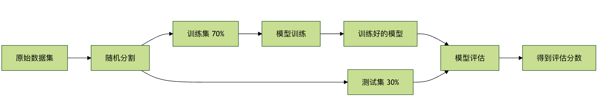

Validación cruzada
En la práctica del aprendizaje automático, a menudo nos enfrentamos a un problema central: ¿cómo evaluar la calidad de un modelo? Podrías pensar en entrenar el modelo con una parte de los datos y luego probar su rendimiento con otra parte de datos no vistos. Esta idea es completamente correcta, pero ¿cómo hacerlo de manera más fiable y estable para evaluar el modelo? Esto es lo quela validación cruzadapretende resolver como problema central.
En pocas palabras, la validación cruzada es un método estadístico que evalúa la capacidad de generalización del modelo (es decir, su capacidad para manejar datos nuevos) dividiendo repetidamente el conjunto de datos. Es como organizar un examen simulado para el modelo: se comprueba su nivel real mediante varios conjuntos de exámenes simulados (subconjuntos de datos), evitando así errores de evaluación debido a la casualidad de un solo examen.
Este artículo te ayudará a comprender en profundidad los principios, los métodos comunes y el papel clave de la validación cruzada en la optimización y la ingeniería de modelos.
¿Por qué se necesita la validación cruzada?
Antes de profundizar en los detalles técnicos, primero comprendamos su necesidad mediante una analogía.
Imagina que eres un estudiante que va a presentar un examen importante de matemáticas. Hay dos métodos para evaluar tu nivel:
- Método A (división simple): el profesor selecciona aleatoriamente 10 preguntas del banco de preguntas para que hagas un examen simulado, y usa esa puntuación para predecir tu calificación en el examen final.
- Método B (validación cruzada): el profesor divide el banco de preguntas en 5 partes. La primera vez, te entrena con las partes 2, 3, 4 y 5, y te evalúa con la parte 1; la segunda vez, entrena con las partes 1, 3, 4 y 5, y evalúa con la parte 2... y así sucesivamente 5 veces. Finalmente, se toma el promedio de las 5 calificaciones para evaluarte.
¿Qué método es más fiable? Obviamente esel Método B。
- El Método Atiene el riesgo de que, si las 10 preguntas seleccionadas resultan ser precisamente los tipos de preguntas en los que eres bueno, tu puntuación en el examen simulado será artificialmente alta, lo que llevará a un optimismo excesivo sobre tu nivel real; por el contrario, si resultan ser todas tus puntos ciegos de conocimiento, la puntuación será demasiado baja, lo que llevará a un pesimismo excesivo. Los resultados de la evaluación fluctúan mucho y son inestables.
- El Método BAl pasar por múltiples combinaciones diferentes de entrenamiento/prueba, experimentas la prueba de varios tipos de preguntas del banco. La puntuación promedio obtenida representa mejor tu nivel integral y estable, y predecir el resultado del examen final también es más preciso.
En el aprendizaje automático:
- El banco de preguntases nuestroconjunto de datos completo。
- El estudiantees elmodelo de aprendizaje automático que queremos entrenar。
- La puntuación del examen simuladoes lamétrica de evaluación(como exactitud, error cuadrático medio, etc.).
- El examen finales el desempeño del modelo en el futuro sobredatos reales y desconocidos.
El objetivo central de la validación cruzada es proporcionar una estimaciónmás robusta e imparcial de la capacidad de generalización del modelo, lo que nos ayuda a realizar una selección de modelos, ajuste de parámetros y evaluación de rendimiento más fiables.
Métodos comunes de validación cruzada
La validación cruzada tiene múltiples formas de implementación, adecuadas para diferentes datos y escenarios. A continuación se presentan las más utilizadas.
1. Método de reserva (Hold-Out Validation)
Este es el método más simple e intuitivo.
Ejemplo
from sklearn.model_selection import train_test_split
from sklearn.ensemble import RandomForestClassifier
from sklearn.metrics import accuracy_score
# Construir datos ejecutables
# 200 muestras, 4 características, clasificación binaria
np.random.seed(42)
X = np.random.randn(200, 4)
y = (X[:, 0] + X[:, 1] * 0.7 - X[:, 2] * 0.4 > 0).astype(int)
# 1. Dividir el conjunto de entrenamiento y el de prueba (7:3)
X_train, X_test, y_train, y_test = train_test_split(
X, y, test_size=0.3, random_state=42
)
# 2. Entrenar el modelo
model = RandomForestClassifier(random_state=42)
model.fit(X_train, y_train)
# 3. Evaluación del conjunto de prueba
y_pred = model.predict(X_test)
accuracy = accuracy_score(y_test, y_pred)
print(f"Precisión del modelo: {accuracy:.4f}")
Resultado de salida:
模型准确率: 0.8833
Descripción del proceso:

-
Ventajas:Simple y rápido, con bajo costo computacional.
- Desventajas:El resultado de la evaluación depende en gran medida de una única división aleatoria. Si la división no es afortunada, el resultado puede no ser representativo. Además, como el conjunto de prueba solo se usa una vez, los datos no se aprovechan suficientemente.
2. Validación cruzada K-Fold (K-Fold Cross Validation)
Este es el método de validación cruzada más utilizado y estándar en la actualidad.
Principio:Dividir el conjunto de datosuniformementey aleatoriamente en K subconjuntos mutuamente excluyentes (llamados pliegues o folds).
En cada experimento, se turna uno de los subconjuntos como conjunto de prueba y los K-1 subconjuntos restantes como conjunto de entrenamiento. Este proceso se repite K veces, asegurando que cada subconjunto se use una vez como conjunto de prueba. Finalmente, obtenemos K puntuaciones de evaluación y tomamos su promedio como la estimación final del rendimiento del modelo.
Ejemplo
from sklearn.model_selection import cross_val_score, KFold
from sklearn.linear_model import LogisticRegression
# Construir datos de ejemplo ejecutables
# 100 muestras, 4 características, etiqueta de clasificación binaria
np.random.seed(42)
X = np.random.randn(100, 4)
y = (X[:, 0] + X[:, 1] * 0.5 > 0).astype(int)
# 1. Inicializar el modelo
model = LogisticRegression(max_iter=1000)
# 2. Definir el divisor de validación cruzada de K pliegues (K=5)
kfold = KFold(n_splits=5, shuffle=True, random_state=42)
# 3. Realizar la validación cruzada
scores = cross_val_score(model, X, y, cv=kfold, scoring='accuracy')
print(f"Exactitud de cada pliegue: {scores}")
print(fExactitud media: {scores.mean():.4f} (+/- {scores.std() * 2:.4f}))
每次折叠的准确率: [0.9 0.95 1. 0.95 1. ] 平均准确率: 0.9600 (+/- 0.0748)
Diagrama del proceso cuando K=5:

¿Cómo elegir el valor de K?
- Valores comunes: 5 o 10. Es una compensación empírica.
- Valores de K pequeños (como 3): el conjunto de entrenamiento es más grande, pero hay menos evaluaciones y la varianza de la estimación puede ser mayor.
- Valores de K grandes (como 10 o 20): la evaluación es más estable (menor varianza), pero cada conjunto de entrenamiento está más cerca del conjunto de datos original, lo que puede introducir un sesgo de estimación más optimista, y el costo computacional aumenta significativamente.
- Caso extremo K = N (número de muestras): este es el método de dejar uno fuera (leave-one-out), donde se prueba con una sola muestra cada vez. La evaluación es la más imparcial, pero el costo computacional es extremadamente alto y generalmente solo se usa en conjuntos de datos muy pequeños.
Ventajas:Aprovechamiento completo de los datos, resultados de evaluación estables y fiables.
Desventajas:El costo computacional es K veces el del método de reserva.
3. Validación cruzada estratificada K-Fold (Stratified K-Fold Cross Validation)
Esta es una variante importante de la validación cruzada K-Fold, especialmente adecuada paraproblemas de clasificaciónMediocon distribución de clases desequilibradaen conjuntos de datos.
Problema que resuelve:En la validación cruzada K-Fold ordinaria, la división aleatoria puede hacer que, en algunos pliegues, la proporción de muestras de una clase difiera mucho de la del conjunto de datos original. Por ejemplo, si un conjunto de datos tiene 90% de clases positivas y 10% de clases negativas, al dividirlo aleatoriamente en 5 pliegues, es posible que un pliegue contenga solo clases positivas y ninguna negativa, lo que hace que la evaluación en ese pliegue pierda sentido.
La validación cruzada estratificada K-Fold, al dividir, garantiza que la proporción de muestras de cada clase en cada pliegue se mantenga consistente con la proporción general del conjunto de datos original.
Ejemplo
# El uso es casi el mismo que KFold; solo hay que reemplazar el divisor
stratified_kfold = StratifiedKFold(n_splits=5, shuffle=True, random_state=42)
scores = cross_val_score(model, X, y, cv=stratified_kfold, scoring='accuracy')
Para tareas de clasificación, especialmente cuando hay desequilibrio de clases,se recomienda usar preferentementeStratifiedKFold。
4. Validación cruzada para series temporales (Time Series Split)
Para datos de series temporales, el orden de los datos es crucial (los datos de mañana dependen de los de hoy y de ayer). No podemos barajar los datos aleatoriamente; debemos mantener el orden temporal.Su principio es: el conjunto de entrenamiento siempre está compuesto por datos anteriores en el tiempo, y el conjunto de prueba son los datos inmediatamente posteriores. A medida que aumenta el número de pliegues, la ventana del conjunto de entrenamiento se expande continuamente.
Ejemplo
Ejemplo
from sklearn.model_selection import TimeSeriesSplit
# 100 puntos temporales, 2 características
# Ejemplo de TimeSeriesSplit
np.random.seed(42)
X = np.random.randn(100, 2)
"Rango de índices del conjunto de entrenamiento: {train_index
tscv = TimeSeriesSplit(n_splits=5)
for train_index, test_index in tscv.split(X):
print(fRango de índices del conjunto de prueba: {test_index)
print(fSalida:)
print("---")
Aplicación de la validación cruzada en la ingeniería de modelos
训练集索引范围: 0 到 19 测试集索引范围: 20 到 35 --- 训练集索引范围: 0 到 35 测试集索引范围: 36 到 51 --- 训练集索引范围: 0 到 51 测试集索引范围: 52 到 67 --- 训练集索引范围: 0 到 67 测试集索引范围: 68 到 83 --- 训练集索引范围: 0 到 83 测试集索引范围: 84 到 99 ---
Aplicación de la validación cruzada en la ingeniería de modelos
La validación cruzada no es solo una herramienta de evaluación, sino un componente central en la optimización de modelos y en los flujos de trabajo de ingeniería.
Aplicación 1: Selección y comparación de modelos
Cuando es necesario elegir uno entre varios modelos candidatos (como regresión lineal, árboles de decisión, máquinas de vectores de soporte), no podemos usar el conjunto de prueba para elegir (de lo contrario, el conjunto de prueba se convierte en parte del proceso de entrenamiento y "filtra" información). El procedimiento correcto es:
- Para cada modelo candidato, enel conjunto de entrenamientose utiliza la validación cruzada para obtener su estimación de rendimiento.
- Compare las puntuaciones promedio de estas validaciones cruzadas y seleccione el modelo con la puntuación más alta.
- Finalmente, vuelva a entrenar el modelo seleccionado en todo el conjunto de entrenamiento y utiliceun conjunto de prueba independientepara realizar una evaluación final única, e informe esta puntuación como el rendimiento final del modelo.
Ejemplo
from sklearn.model_selection import cross_val_score, StratifiedKFold, train_test_split
from sklearn.linear_model import LogisticRegression
from sklearn.svm import SVC
from sklearn.tree import DecisionTreeClassifier
# Construir datos de clasificación ejecutables
# 200 muestras, 4 características, clasificación binaria
np.random.seed(42)
X = np.random.randn(200, 4)
y = (X[:, 0] + X[:, 1] * 0.8 - X[:, 2] * 0.3 > 0).astype(int)
# Dividir el conjunto de entrenamiento / el conjunto de prueba
X_train, X_test, y_train, y_test = train_test_split(
X, y, test_size=0.25, random_state=42, stratify=y
)
# definir el modelo
models = {
'Logistic Regression': LogisticRegression(max_iter=1000),
'SVM': SVC(),
'Decision Tree': DecisionTreeClassifier()
}
# Validación cruzada estratificada de K pliegues
cv = StratifiedKFold(n_splits=5, shuffle=True, random_state=42)
results = {}
# Evaluación de validación cruzada
for name, model in models.items():
scores = cross_val_score(model, X_train, y_train, cv=cv, scoring='accuracy')
results[name] = scores.mean()
print(f"{name} exactitud promedio: {scores.mean():.4f}")
# Seleccionar el mejor modelo
best_model_name = max(results, key=results.get)
print(f"\nSegún la validación cruzada, el mejor modelo es: {best_model_name}")
# Evaluación del conjunto de entrenamiento y prueba final
best_model = models[best_model_name]
best_model.fit(X_train, y_train)
final_score = best_model.score(X_test, y_test)
print(fLa precisión final del mejor modelo en el conjunto de prueba independiente: {final_score:.4f})
Salida:
Logistic Regression 平均准确率: 0.9533 SVM 平均准确率: 0.9400 Decision Tree 平均准确率: 0.8467 根据交叉验证，最佳模型是: Logistic Regression 最佳模型在独立测试集上的最终准确率: 1.0000
Aplicación 2: Ajuste de hiperparámetros
Los hiperparámetros son parámetros que deben establecerse antes del entrenamiento del modelo (como el número de árboles en un bosque aleatorion_estimators, el coeficiente de penalización de la SVMC). El proceso de encontrar la mejor combinación de hiperparámetros se denominaajuste de hiperparámetros, y la validación cruzada es su método de evaluación estándar.
El método más utilizado esla búsqueda en cuadrícula con validación cruzada。
Ejemplo
from sklearn.model_selection import GridSearchCV, train_test_split
from sklearn.ensemble import RandomForestClassifier
# Construir datos de clasificación ejecutables
# 300 muestras, 5 características, clasificación binaria
np.random.seed(42)
X = np.random.randn(300, 5)
y = (X[:, 0] * 0.6 + X[:, 1] * 0.4 - X[:, 2] > 0).astype(int)
# Dividir el conjunto de entrenamiento / el conjunto de prueba
X_train, X_test, y_train, y_test = train_test_split(
X, y, test_size=0.25, random_state=42, stratify=y
)
# 1. Cuadrícula de parámetros
param_grid = {
'n_estimators': [50, 100, 200],
'max_depth': [None, 10, 20],
'min_samples_split': [2, 5, 10]
}
# 2. Modelo base
rf = RandomForestClassifier(random_state=42)
# 3. GridSearchCV
grid_search = GridSearchCV(
estimator=rf,
param_grid=param_grid,
cv=5,
scoring='accuracy',
n_jobs=-1
)
# 4. Búsqueda en cuadrícula (solo conjunto de entrenamiento)
grid_search.fit(X_train, y_train)
# 5. Parámetros óptimos y puntuación
print(f"Mejores parámetros: {grid_search.best_params_}")
print(f"Mejor puntuación de validación cruzada: {grid_search.best_score_:.4f}")
# 6. Evaluación del conjunto de prueba
best_rf_model = grid_search.best_estimator_
test_accuracy = best_rf_model.score(X_test, y_test)
print(fExactitud del modelo ajustado en el conjunto de prueba: {test_accuracy:.4f})
Salida:
最佳参数: {'max_depth': None, 'min_samples_split': 2, 'n_estimators': 100}
最佳交叉验证分数: 0.9067
调优后模型在测试集上的准确率: 0.9467
Puntos clave: GridSearchCVInternamente ya se ha realizado la validación cruzada. Divide el conjunto de entrenamientoX_trainen subconjuntos más pequeños de "entrenamiento" y "validación" para evaluar los parámetros; por lo tanto, lo que pasamosX_trainequivale a todo el "banco de preguntas", yX_testes el "examen final" que nunca ha participado en el proceso de ajuste y se utiliza para la prueba definitiva.
Práctica y resumen
Ejercicio práctico
- Implementación básica: use
sklearnel conjunto de datos de iris incluido, y use respectivamentetrain_test_splitycross_val_score(K=5) para entrenar y evaluar unKNeighborsClassifier, y compare las puntuaciones obtenidas con los dos métodos de evaluación. - Comparación de modelos: en el mismo conjunto de datos, utilice la validación cruzada para comparar
SVC、RandomForestClassifieryGradientBoostingClassifierel rendimiento. - Ajuste de hiperparámetros: para
SVCel modelo, diseñe una cuadrícula de parámetros (que incluyaCygamma), useGridSearchCVpara encontrar los parámetros óptimos.
Resumen de puntos clave
- Propósito de la validación cruzada: obtener una estimación más robusta y fiable de la capacidad de generalización del modelo.
- Método principal：La validación cruzada de K pliegueses el estándar de oro; para problemas de clasificación se prefierela validación cruzada estratificada de K pliegues。
- Diferencias clave：
- Conjunto de entrenamiento/validación: se utiliza para el entrenamiento del modelo yla evaluación durante el proceso de desarrollo(como la selección de modelos y el ajuste de parámetros). La validación cruzada ocurre en esta etapa.
- Conjunto de prueba: solo después de completar todo el desarrollo, se utiliza parael informe final de rendimiento de una sola vez. Debe mantenerse estrictamente aislado y nunca debe utilizarse para ninguna decisión.
- Rol de ingeniería: la validación cruzada es el puente que conecta el desarrollo del modelo (entrenamiento, ajuste de parámetros) con la evaluación del modelo (prueba), y es la piedra angular para garantizar la calidad del modelo, prevenir el sobreajuste y lograr una selección y optimización fiables del modelo.